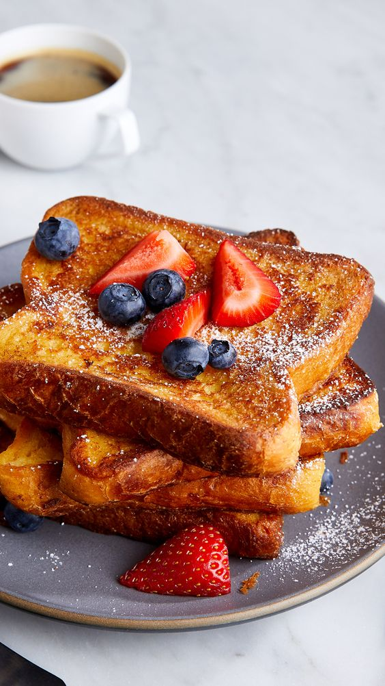
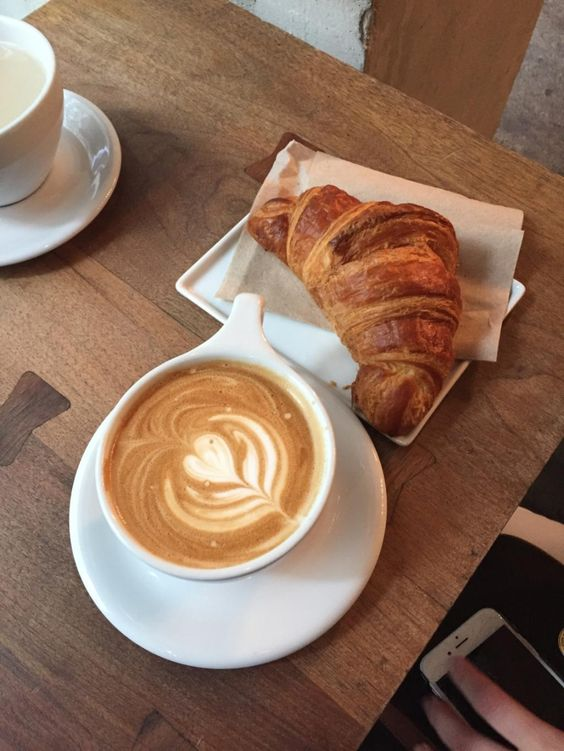
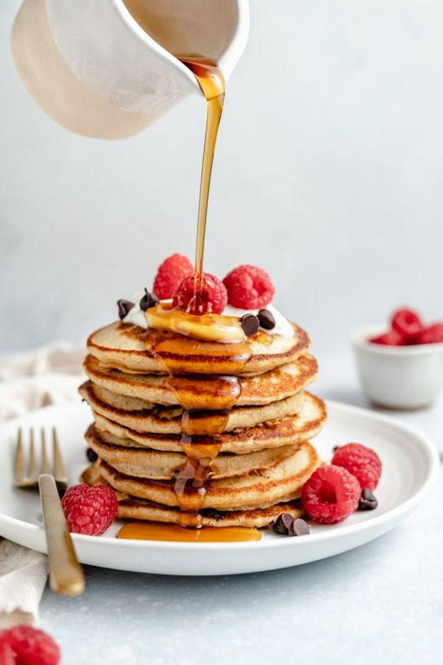
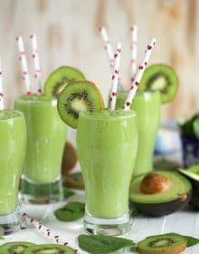
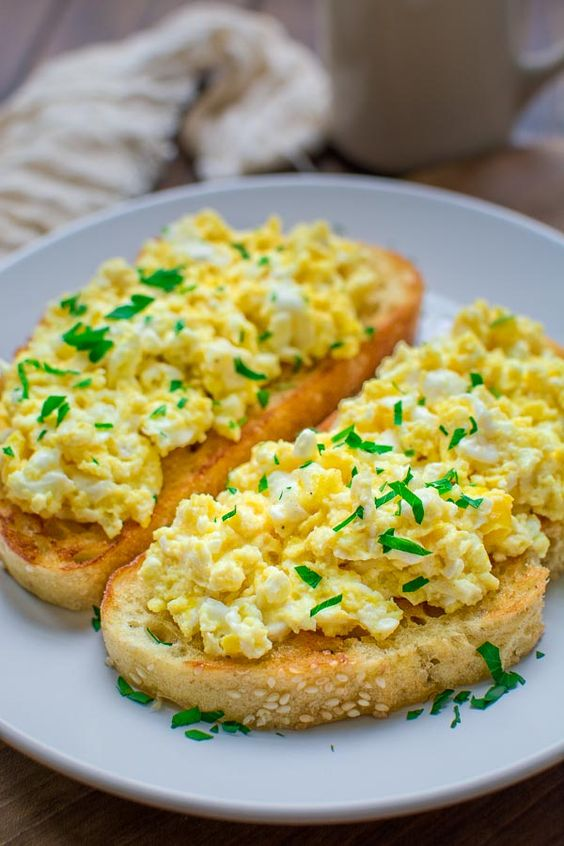

{% extends 'base.html' %} {% block content %}
{% block title %}THE BREAKFAST BAR{% endblock %}
French Toast

Ingredients
- Bread
- Eggs
- Milk
- Salt
- Flavourings (vanilla extract or cinnamon)
- Maple syrup
Method
- Whisk together the eggs, milk, sweetener, vanilla extract
- Ground cinnamon right into a shallow dish
- Dip the bread one slice at a time, flip it and remove from the mixture
- Place the bread slices into the skillet with melted butter set over medium heat.
- Serve immediately with maple syrup drizzled on top or your syrup of choice.
- You can also serve with fruit like fresh berries e.g blackberries, blueberries or strawberries
Coffee Latte

Ingredients
- 2 cups of milk
- 1 cup of freshly brewed dark roast espresso coffee
- Thin layer of frothed milk on top.
- 2 cups of sugar
- Liquid sweetener
Method
- Heat milk in a saucepan set over medium-low heat.
- Whisk briskly with a wire whisk to create foam.
- Brew espresso and pour into four cups.
- Pour in milk, holding back the foam with a spoon.
- Spoon foam over the top.
Pancakes

Ingredients
- 1 cup all-purpose flour
- 2 tablespoons white sugar
- 2 teaspoons baking powder
- 1 teaspoon salt to taste
- 1 cup milk
- 2 tablespoons vegetable oil
- 1 egg, beaten
Method
- Combine flour, sugar, baking powder, and salt in a large bowl.
- Make a well in the center and pour in milk, oil, and egg.
- Mix until smooth.
- Heat a lightly oiled griddle or frying pan over medium-high heat.
- Pour or scoop batter onto the griddle, using approximately 1/4 cup for each pancake
- Cook until bubbles form and the edges are dry,1 to 2 minutes.
- Flip and cook until browned on the other side and repeat the same
Kiwi Smoothie

Ingredients
- ½ cup Greek yogurt (or coconut milk for vegan)
- ¼ cup water, plus more as needed
- 2 kiwi
- 2 handfuls baby spinach
- 1 banana and 1 frozen pineapple chunks
Method
- Peel and chop the kiwi
- Add all ingredients to the blender
- Adding the liquids first and breaking the banana into pieces.
- Blend until smooth, adding more water if necessary
- Eat immediately or store up to 1 day refrigerated in a covered jar.
Egg Toast

Ingredients
- Bread
- 1 tablespoon of mayonnaise, to taste
- Butter
- 1 large egg
Method
- Toast your bread until golden brown and crisped around the edges. Smear thin layer of mayonnaise
- Place a pan over medium heat. Add butter and wait till it melts.
- Once hot crack the egg into the pan, turn heat to medium low
- Once cooked transfer the egg onto the toast and serve with preferred beverage.
{% endblock %}